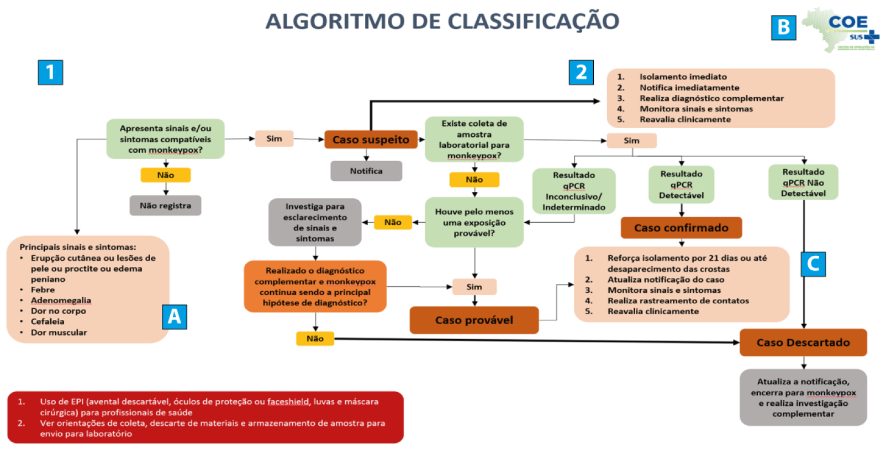
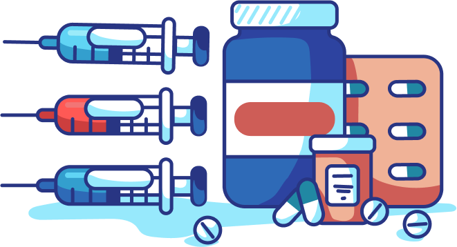

SOBRE O MATERIAL
 Objetivo Geral
Objetivo Geral
Este material tem como objetivo apresentar a importância da notificação para a vigilância epidemiológica dos casos, o preenchimento correto da ficha de notificação e o rastreamento e monitoramento de contatos. Discute ainda o bloqueio na cadeia de transmissão, a definição de prioridades e o uso de evidências nas imunizações com vacinas.
10 horas
As ações de vigilância são fundamentais tanto para o enfrentamento quanto para a contenção da disseminação da mpox. Se pensarmos nos objetivos e nas ações da vigilância, lembraremos dos seguintes fatores: identificação rápida de casos para o isolamento e tratamento adequado do paciente; rastreamento de contatos com a finalidade de quebrar a cadeia de transmissão; proteção dos profissionais de saúde expostos; identificação de possíveis grupos de riscos; e implementação de medidas de controle eficientes e seguras. Vamos abordar agora, com mais detalhes, a vigilância epidemiológica nos casos da mpox.
NOTIFICAÇÃO DOS CASOS DE MPOX
Para falar sobre a notificação dos casos de mpox, vamos relembrar um conceito primordial, o de vigilância em saúde, definido na Política Nacional de Vigilância em Saúde (PNVS) como:
É importante que você conheça essa definição para que tenha sempre em mente o que norteia o processo de notificação dos casos de mpox (assim como de outras doenças) nos serviços de saúde. Quando pensamos na coleta de dados relacionados a alguma doença de notificação compulsória, precisamos lembrar que a finalidade das notificações é coletar sistemática e continuamente dados sobre as pessoas que estão adoecendo para produzir informações sobre os casos suspeitos e/ou confirmados. Essas informações podem ser úteis para conhecer o perfil da doença no território, compreender o cenário atual de casos e subsidiar tomadas de decisão da gestão.
Dessa forma, o Ministério da Saúde (MS) estabeleceu, em 2014, a Lista Nacional de Notificação Compulsória de Doenças, Agravos e Eventos de Saúde Pública, publicada por meio de ato normativo que passa por atualização sempre que necessário. A Portaria GM/MS nº 3.418/2022, inclui a mpox na lista.
Inicialmente, a notificação dos casos suspeitos, confirmados e prováveis de mpox ocorriam via ficha específica disponibilizada na plataforma REDCap. Atualmente, a notificação dos casos é realizada pelo sistema e-SUS Sinan (http://plataforma.saude.gov.br/esussinan/), de acesso exclusivo a profissionais da vigilância devidamente cadastrados.
Definições de caso
O MS preconiza que devem ser notificados e investigados os indivíduos que atendam à definição de caso suspeito, caso confirmado ou caso provável:

Saiba mais!
Mas você sabe como os casos de mpox são definidos para poder realizar a notificação e investigação adequada?
Caso suspeito:
Indivíduo de qualquer idade que apresente início súbito de lesão em mucosas E/OU erupção cutânea aguda de mpox, única ou múltipla, em qualquer parte do corpo (incluindo região genital/perianal, oral) E/OU proctite (por exemplo, dor ou sangramento anorretal) E/OU edema peniano, podendo estar associada a outros sinais e sintomas.
Caso confirmado:
Caso suspeito com resultado laboratorial "Positivo/Detectável" para MPXV por diagnóstico molecular (PCR em Tempo Real e/ou Sequenciamento).
Caso provável:
Caso que atende à definição de caso suspeito, que apresenta um OU mais dos seguintes critérios listados abaixo, com investigação laboratorial de mpox não realizada ou inconclusiva e cujo diagnóstico da doença não pode ser descartado apenas pela confirmação clínico-laboratorial de outro diagnóstico.
Clique nas abas para interagirExposição próxima e prolongada, sem proteção respiratória, OU contato físico direto, incluindo contato sexual, com parcerias múltiplas e/ou desconhecidas nos 21 dias anteriores ao início dos sinais e sintomas; E/OU
Exposição próxima e prolongada, sem proteção respiratória, OU história de contato íntimo, incluindo sexual, com caso provável ou confirmado de mpox nos 21 dias anteriores ao início dos sinais e sintomas; E/OU
Contato com materiais contaminados, como roupas de cama e banho ou utensílios de uso comum, pertencentes a um caso provável ou confirmado de mpox nos 21 dias anteriores ao início dos sinais e sintomas; E/OU
Trabalhadores de saúde sem uso adequado de equipamentos de proteção individual com história de contato ou acidente profissional com material biológico para investigação de um caso provável ou confirmado de mpox nos 21 dias anteriores ao início dos sinais e sintomas.
Para fins de vigilância e encerramento dos casos, a partir da investigação, a classificação do caso pode atender a outras definições preconizadas pelo MS:
Clique nos itens para interagirCaso suspeito com resultado laboratorial “Negativo/Não Detectável” para MPXV por diagnóstico molecular (PCR em Tempo Real e/ou Sequenciamento) OU sem resultado laboratorial para MPXV E realizado diagnóstico complementar que descarta MPXV como a principal hipótese de diagnóstico.
Notificação que não atende às definições de caso suspeito.
Caso que atenda à definição de caso suspeito e que atenda aos critérios listados abaixo:
Cabe ressaltar que as definições de Exclusão e de Perda de seguimento têm o objetivo de aprimorar o processo de análise dos dados e o encerramento dos casos já notificados, não sendo recomendado notificar um caso que atenda a uma dessas definições.
ALGORITMO DE CLASSIFICAÇÃO E ORIENTAÇÕES PARA PREENCHIMENTO DA FICHA DE NOTIFICAÇÃO
Para orientar a notificação dos casos da doença, o MS publicou, no Plano de Contingência Nacional para mpox, o Algoritmo de Classificação (Figura 1). Assim, quando há suspeita de um caso, devem ser considerados os principais sinais e sintomas apresentados no quadro com a letra A, buscando responder à primeira pergunta: o caso apresenta sinais e/ou sintomas compatíveis com mpox? Se a resposta for negativa, o caso não deve ser notificado, sendo importante compreender qual ou quais são as demais hipóteses diagnósticas para a melhor conduta. Em caso de resposta positiva, o caso atende à definição de caso suspeito e deve ser notificado. Concomitantemente, é preciso seguir as instruções do quadro com a letra B.

Fonte: adaptado do Plano de Contingência Nacional para Monkeypox (BRASIL, 2022). Ficha de notificaçãoDesde 19 de setembro de 2022, as notificações dos Agravos de Notificação Compulsória são realizadas pela Plataforma Integrada de Vigilância em Saúde do MS. Essa plataforma apresenta uma nova versão do Sistema de Informação de Agravos de Notificação, denominada e-SUS Sinan, que contempla a notificação e investigação de casos de doenças e agravos que constam na Lista Nacional de Notificação Compulsória de Doenças, agravos e eventos de saúde pública. É uma importante ferramenta que auxilia o planejamento da saúde e define prioridades de intervenção, além de permitir que seja avaliado o impacto das ações realizadas pelos gestores (BRASIL, 2022b).
Ao iniciar o preenchimento da ficha, os primeiros dados solicitados são as informações gerais sobre a notificação, como Unidade da Federação de notificação, data e nome da Unidade de Saúde notificadora. Esses campos são obrigatórios, pois permitem a comunicação com os notificantes e ajudam a atualizar as informações relacionadas ao caso, sempre que necessário.
Em seguida, são solicitados os dados sociodemográficos do paciente, como nome completo, data de nascimento, idade, sexo de nascimento, identidade de gênero, orientação sexual e outras informações específicas. A maior parte dessas informações é de preenchimento obrigatório, pois a ausência delas pode inviabilizar a comunicação sobre o caso. Portanto, é importante coletá-las antes de iniciar o processo de notificação.
O próximo bloco da ficha coleta dados clínicos, laboratoriais e de exposição. Para preenchimento desses campos, tenha em mãos informações sobre: a presença de sinais e sintomas da doença, o histórico de vacinação contra varíola, a coleta de amostra laboratorial, hospitalização e evolução do caso. É essencial ter em mãos também dados de possíveis exposições do caso: se houve exposição próxima e prolongada, sem proteção respiratória, com caso provável ou confirmado de mpox; se houve contato físico direto, incluindo sexual, com desconhecido/a(s) e ou parcerias múltiplas, nos 21 dias anteriores ao início dos sinais e sintomas; se houve história de contato íntimo, incluindo sexual, com algum caso provável ou confirmado de mpox nos 21 dias anteriores ao início dos sinais e sintomas; se houve contato com materiais contaminados, como roupas de cama e banho ou utensílios de uso comum, pertencentes a caso provável ou confirmado de mpox nos 21 dias anteriores ao início dos sinais e sintomas; se o paciente é trabalhador de saúde que não fez uso adequado de EPI com história de contato com caso provável ou confirmado de mpox nos 21 dias anteriores ao início dos sinais e sintomas.
Além disso, a ficha também possibilita que o notificador informe a forma provável de transmissão. A ficha disponibiliza uma lista de possibilidades, mas apenas uma pode ser selecionada: do animal para o homem; associado ao cuidado de saúde; transmissão em laboratório; contato com material contaminado; pessoa a pessoa; transmissão via uso de drogas intravenosas e transfusão; transmissão vertical; transmissão sexual; outra transmissão; ou, ainda, transmissão desconhecida.
Por fim, de forma não obrigatória, é possível informar se o caso tem vínculo epidemiológico com um caso confirmado ou provável de mpox.
Todos esses dados auxiliam na elaboração de hipóteses e na busca de cadeias de transmissão no processo de rastreamento de contatos.
Ao final da ficha, deve-se atribuir uma classificação final ao caso, considerando as informações ali inseridas, bem como a evolução do caso (óbito; cura; óbito por outra causa; ignorado).
É importante que você saiba que, se na notificação inicial forem fornecidas apenas informações prévias sobre o caso e, após investigação epidemiológica, forem obtidas novas informações (como exposição, hospitalização ou óbito), deve-se atualizar a ficha de notificação para atualização dos dados.
Saiba mais!
Fique atento! A atualização das fichas de notificação só poderá ocorrer enquanto elas estiverem no status "Investigação em andamento". Uma vez concluída a investigação, o status passa a "Encerrado".
Saiba mais!
Para conhecer as fichas de notificações de mpox, bem como manter-se atualizado sobre o sistema e-SUS Sinan, acesse o endereço eletrônico http://plataforma.saude.gov.br/esussinan/. Nesse endereço eletrônico você encontrará também o dicionário de dados da notificação de mpox, o manual com as instruções do sistema, as legislações vigentes e o link de acesso para realizar a notificação https://esussinan.saude.gov.br.
Agora que você acessou a ficha de notificação de mpox e conhece os dados que precisam ser fornecidos, precisamos voltar ao algoritmo criado e oferecido pelo MS para classificação dos casos e orientação da vigilância.
Se o caso a ser notificado já tem coleta de amostra laboratorial (quadro azul com o número 2 no algoritmo), a classificação dependerá do resultado: se pendente, segue como caso suspeito; se detectável, é considerado caso confirmado; se não detectável, o caso é descartado. Casos confirmados devem seguir as orientações do quadro identificado com a letra C : reforçar isolamento por 21 dias ou até o desaparecimento das crostas; atualizar notificação do caso (se ele tiver sido notificado com classificação diferente); monitoramento dos sinais e sintomas; rastreamento de contatos; e reavaliação clínica.
Se o caso for descartado, deve-se continuar a investigação do quadro clínico para esclarecimento a respeito de diagnósticos complementares e, persistindo a suspeita de mpox, o caso é considerado provável. Em caso de não existência de coleta de amostras, é importante considerar se o caso tem alguma das exposições previstas na definição de caso provável. Se a resposta for sim para uma ou mais, esse caso é provável e permanecem as orientações do quadro C citadas acima.
Lembre-se de que todos os casos de mpox, confirmados ou não, devem ter investigação clínica e epidemiológica adequada para que as informações a serem produzidas com base nos dados disponibilizados na notificação sejam fidedignas e subsidiem a gestão da melhor maneira possível. Dessa forma, recomenda-se que todas as notificações incompletas sejam atualizadas a partir da disponibilização de novas informações dos casos.
RASTREAMENTO DE CONTATOS
O rastreamento de contatos consiste na identificação imediata dos contatos próximos de casos definidos como suspeitos, prováveis e confirmados para mpox.
O rastreamento de contatos é importante para fins de contenção da disseminação da doença, uma vez que pessoas que tiveram contato próximo com pessoas que se enquadram em casos suspeitos, confirmados e prováveis correm o risco de desenvolver a doença. Por isso o rastreamento de contatos deve ser sempre realizado.
A OMS considera contato de caso a pessoa que teve uma ou mais das interações, nos últimos 21 dias, descritas abaixo (WHO, 2022a):
São exemplos de contatos próximos para mpox (BRASIL, 2022a):
Clique nos itens para interagirPessoas que tenham qualquer tipo de contato sexual com o caso de mpox desde o início dos sintomas, inclusive da fase prodrômica.
Pessoa(s) morando no mesmo domicílio ou ambiente semelhante (dormitório, alojamento etc.); pessoa(s) compartilhando roupas, roupas de cama, utensílios etc. com o caso mpox; cuidadores do caso mpox, desde o início de sua erupção (sinais e/ou sintomas).
Os profissionais de saúde que entraram em contato com o caso mpox (lesões ou contato cara a cara prolongado (> 3 horas e < 2 m distância) sem EPI adequado); Profissionais de saúde que sofreram ferimentos com objetos perfurocortantes ou foram expostos a fluidos corporais ou procedimento gerador de aerossol sem EPI; pessoal de laboratório que sofreu acidente de trabalho com amostra contendo vírus (respingo, ferimento por material perfurocortante, exposição a aerossóis etc.).
A ser avaliado caso a caso, mas pode incluir, entre outros, ter sentado ao lado de um caso confirmado durante viagens prolongadas (contato físico direto), compartilhando utensílios ou outro equipamento ou ferimentos por objetos cortantes ligados ao caso mpox.
Pessoas que estiveram presentes em encontros sociais com um caso, trabalhar na mesma empresa ou compartilhar o mesmo espaço que casos confirmados, suspeitos ou prováveis.
Após definirmos o caso e rastrearmos os contatos, qual o próximo passo?
MONITORAMENTO DE CASOS E CONTATOS
Após a identificação de um caso (suspeito, provável ou confirmado) e rastreamento dos contatos devemos monitorá-los. Você sabe o por quê?
O monitoramento de casos e contatos tem como objetivo verificar a evolução clínica e epidemiológica apoiando no direcionamento de manejo, tratamento e outras medidas, como definição de caso e suspensão de isolamento.
O monitoramento de casos suspeitos e de contatos deverá ser iniciado a partir da identificação desses casos. O monitoramento deve ser realizado até o resultado laboratorial do caso suspeito estar disponível. No caso de resultado não detectável o monitoramento deve ser suspenso. Quando o caso suspeito apresenta resultado laboratorial detectável, o(s) contatante(s) de caso deve(m) seguir em monitoramento de 21 dias, avaliando o aparecimento de quaisquer sinais ou sintomas sugestivos de mpox.
Os contatos de casos suspeitos que estejam assintomáticos podem continuar com suas atividades rotineiras e devem ser orientados a realizar o automonitoramento pelo período de 21 dias, avaliando o aparecimento de quaisquer sinais ou sintomas sugestivos de mpox (BRASIL, 2022a).
BLOQUEIO NA CADEIA DE TRANSMISSÃO
A maneira mais segura de se prevenir contra a mpox é evitar o contato direto com pessoas contaminadas. Diante da suspeita da doença, medidas imediatas de investigação epidemiológica, incluindo rastreamento e investigação de contactantes, são necessárias para que a doença seja controlada. A identificação precoce e o isolamento de pacientes com lesões ativas são a principal conduta disponível para interromper a transmissão da doença de pessoa para pessoa, com foco prioritário em grupos com alto risco de exposição.
Você sabe quando descontinuar o isolamento?
Indivíduos com mpox são considerados infecciosos (transmissores da doença) enquanto apresentarem crostas nas lesões. Quando as crostas das lesões caem e a reepitelização (etapa de cicatrização de um ferimento que se caracteriza pelo crescimento do epitélio ao redor da ferida - reparo no tecido da pele) acontece, o que normalmente dura em média 21 dias, indica-se a liberação do isolamento. Contudo, o uso de preservativo em qualquer atividade sexual é sugerido pela OMS por 12 semanas após a recuperação, uma vez que o vírus já foi encontrado no sêmen e em fluidos vaginais e não se sabe ainda a sua implicação na transmissão do vírus (CDC, 2022b).
Atenção! As decisões relativas à descontinuação das precauções de isolamento tanto na unidade de saúde quanto na comunidade devem ser tomadas em consulta com o departamento de saúde local ou estadual.
Saiba mais!
A vacinação, quando disponível, pode dar suporte às estratégias de quebra da cadeia de transmissão do MPXV.
Na próxima unidade, iremos abordar algumas medidas de prevenção e passar orientações de cuidado, para você, profissional da saúde, e para os profissionais do sexo, como também para a população geral, usuários de transporte público e frequentadores de festas e eventos de massa.
VACINAÇÃO E PRIORIDADES: EVIDÊNCIAS NO MUNDO
Nesse material iremos discutir as prioridades de sua aplicação, principalmente pelo número limitado de doses disponível no mundo.
Cabe lembrar que, devido à escassez de estudos específicos sobre as vacinas disponíveis, todos os esforços possíveis devem ser empregados para administrar as vacinas dentro de um esquema de pesquisa colaborativa e de protocolos de ensaios clínicos randomizados com ferramentas padronizadas de coleta de dados para dados clínicos e desfechos.
De acordo com os Centros de Controle de Prevenção de Doenças (CDC), à medida que aumentar a disponibilidade de vacinas, as orientações provisórias sobre a introdução de estratégias de profilaxia pré-exposição (PrEP) podem ser atualizadas. Segue, no Quadro 1, a estratégia de vacinação contra a mpox adotada pelos EUA.

Estratégias de vacinação usadas no surto de mpox nos EUA em 2022
Profilaxia Pós-Exposição (PEP)
- Definição
Vacinação após exposição conhecida à mpox.
- Critério
Pessoas que são contatos conhecidos de alguém com mpox identificados pelas autoridades de saúde pública, por exemplo, por meio de investigação de casos, rastreamento de contatos ou avaliação de exposição ao risco.
- Tempo de profilaxia
Profilaxia Pós-Exposição Expandida(PEP++)
- Definição
Vacinação após exposição conhecida ou presumida à mpox.
- Critério
- Tempo de profilaxia
Profilaxia Pré-Exposição (PrEP)
- Definição
Vacinação antes da exposição à mpox.
- Critério
Pessoas em determinados grupos de risco ocupacional.
As pessoas em risco de exposição ocupacional a ortopoxvirus incluem trabalhadores de laboratórios de pesquisa que realizam testes de diagnóstico para o MPXV e membros de equipes de resposta de profissionais de saúde designados pelas autoridades apropriadas de saúde pública e antiterror (consulte as recomendações do ACIP no link: https://www.cdc.gov/vaccines/hcp/acip-recs/vacc-specific/smallpox.html#print).
Fonte: adaptado de Centers for Disease Control and Prevention (2022a).No Brasil, a Agência Nacional de Vigilância Sanitária (Anvisa) aprovou, em 25 de agosto de 2022, a dispensa de registro para que o MS importasse e utilizasse a vacina Jynneos (MVA-BN) para imunização contra a mpox, em virtude da doença ter sido declarada uma emergência de saúde pública de importância internacional (Anvisa, 2022). Para fins de dispensa do registro sanitário, em caráter excepcional e temporário, a Anvisa considera a aprovação de uso do medicamento ou vacina por, pelo menos, uma das seguintes autoridades:

Curiosidade
Vamos relembrar!!! Uma emergência em saúde pública caracteriza-se como uma situação epidemiológica (surtos e epidemias), de desastre ou de desassistência à população que demande o emprego urgente de medidas de prevenção, de controle e de contenção de riscos, de danos e de agravos à saúde pública.
Saiba mais!
Você pode acessar as especificações da vacina Jynneos clicando aqui.
E também saiba mais sobre a aprovação e liberação da vacina Jynneos pela Anvisa no endereço eletrônico: https://www.gov.br/anvisa/pt-br/assuntos/noticias-anvisa/2022/anvisa-aprova-liberacao-de-vacina-para-monkeypox-para-uso-pelo-ministerio-da-saude.
O Brasil adquiriu cerca de 50.000 doses dos imunobiológicos em 2022. Entretanto, seguindo a orientação da OMS, uma vez que a vacinação em massa não é recomendada, a melhor opção é adotar estratégias robustas de vigilância (WHO, 2022b) dessa forma, a identificação dos grupos de maior risco de infecção poderá ser feita e é fundamental para tornar esses grupos prioritários para a vacinação.
Assim, não será iniciada a vacinação em larga escala no Brasil e as estratégias de vacinação têm como objetivo principal a proteção dos indivíduos com maior risco de evolução para as formas graves da doença, dentro do atual cenário da transmissão do vírus observadas no país (BRASIL, 2023).
De acordo com o Informe Técnico Operacional de Vacinação Contra a Mpox (BRASIL, 2023), poderão receber vacinação pré-exposição: pessoas vivendo com HIV/Aids, com idade igual ou superior a 18 anos e com contagem de linfócitos TCD4 inferior a 200 células nos últimos seis meses; e profissionais de laboratório que trabalham diretamente com Orthopoxvirus em laboratórios de segurança nível 3 com idade entre 18 a 49 anos. Poderão receber vacinação pós exposição pessoas que tiveram exposição de alto ou médio risco com secreções e/ou fluidos corporais de indivíduos suspeitos, prováveis ou confirmados para mpox.
Fiquem atentos aos critérios de inclusão e exclusão para a vacinação nas diferentes situações de exposição, bem como as descrições de risco acessando o Informe Técnico Operacional de Vacinação Contra a Mpox e suas atualizações: Baixando aqui.
Assim, considerando o cenário atual da mpox no país e o constante processo de atualização diante das ações de prevenção e vigilância dos casos, é muito importante que os profissionais da saúde se mantenham atualizados sobre as ações a serem desenvolvidas durante o surto da doença no país. Nesse sentido, o MS disponibiliza, em suas plataformas de comunicação, diversos documentos que subsidiam o aprimoramento do conhecimento necessário para a tomada de decisão do profissional.
Saiba mais!
Saiba mais sobre as Recomendações Temporárias emitidas pela OMS, em relação ao surto de mpox, que visa interromper o surto e a transmissão de humano para humano, proteger os vulneráveis e minimizar a transmissão zoonótica do vírus:
Clique aqui.REFERÊNCIAS
AGÊNCIA NACIONAL DE VIGILÂNCIA SANITÁRIA. Extrato de Liberação da DICOL. Dispensa, em caráter excepcional e temporário, do registro da vacina Jynneos / Imvanex, fabricada pela empresa Bavarian Nordic A/S. 25/08/2022. 2022c. Disponível em:https://www.gov.br/anvisa/pt-br/composicao/diretoria-colegiada/reunioes-da-diretoria/extratos-dos-circuitos-deliberativos-1/2022/extrato-cd-863-2022-dispensa-de-registro-nos-termos-da-rdc-747_2022200b-sei_25351_9228002022_48.pdf/.
Acesso em 25 dez. 2022.
BRASIL. Ministério da Saúde. Informe Técnico Operacional de Vacinação Contra a Mpox. 2023. Disponível em: https://www.gov.br/saude/pt-br/assuntos/variola-dos-macacos/publicacoes/informativos/informe-tecnico-operacional-de-vacinacao-contra-a-mpox/view
Acesso em: 20 mar. 2023.
BRASIL. Ministério da Saúde. Plano de Contingência Nacional para Monkeypox. Centro de Operações de Emergência em Saúde Pública: COE Monkeypox. 2022a. Versão 2. BRASIL. Ministério da Saúde. E-SUS
SINAN - Plataforma Integrada de Vigilância em Saúde - Ministério da Saúde. 2022b. Disponível em: http://plataforma.saude.gov.br/esussinan/. Acesso em: 31 dez. 2022.
BRASIL. Ministério da Saúde. Resolução nº 588, de 12
de julho de 2018. Diário Oficial da União, Brasília, DF, 13 ago. 2018. Disponível em: https://www.in.gov.br/materia/-/asset_publisher/Kujrw0TZC2Mb/content/id/36469447/do1-2018-08-13-resolucao-n-588-de-12-de-julho-de-2018-36469431.
Acesso em: 13 nov. 2022.
BRASIL. Ministério da Saúde. Portaria nº 1.271, de 6 de junho de 2014. Define a Lista Nacional de Notificação Compulsória de doenças, agravos e eventos de saúde pública nos serviços de saúde públicos e privados em todo o território nacional, nos termos
do anexo, e dá outras providências. Diário Oficial da União, Brasília, DF, 2014. Disponível em: https://bvsms.saude.gov.br/bvs/saudelegis/gm/2014/prt1271_06_06_2014.html. Acesso em: 13 nov. 2022.
CENTERS FOR DISEASE CONTROL AND PREVENTION. Monkeypox Vaccination Basics. 2022. 2022a Disponível em: https://www.cdc.gov/poxvirus/monkeypox/vaccines/vaccine-basics.html. Acesso em: 13 nov. 2022.
CENTERS FOR DISEASE CONTROL
AND PREVENTION. Isolation and prevention practices for people with monkeypox. 2022. 2022b Disponível em: https://www.cdc.gov/poxvirus/monkeypox/clinicians/isolation-procedures.html. Acesso em: 19 nov. 2022.
WORLD HEALTH
ORGANIZATION. Surveillance, case investigation and contact tracing for mpox (monkeypox). 22 dez. 2022. 2022a Disponível em: https://www.who.int/publications/i/item/WHO-MPX-Surveillance-2022.4. Acesso em: 25 dez. 2022.
WORLD HEALTH ORGANIZATION. Vaccines and immunization for monkeypox. 16 vov. 2022. Disponível em: https://www.who.int/publications/i/item/WHO-MPX-Immunization. Acesso em 30 dez. 2022.